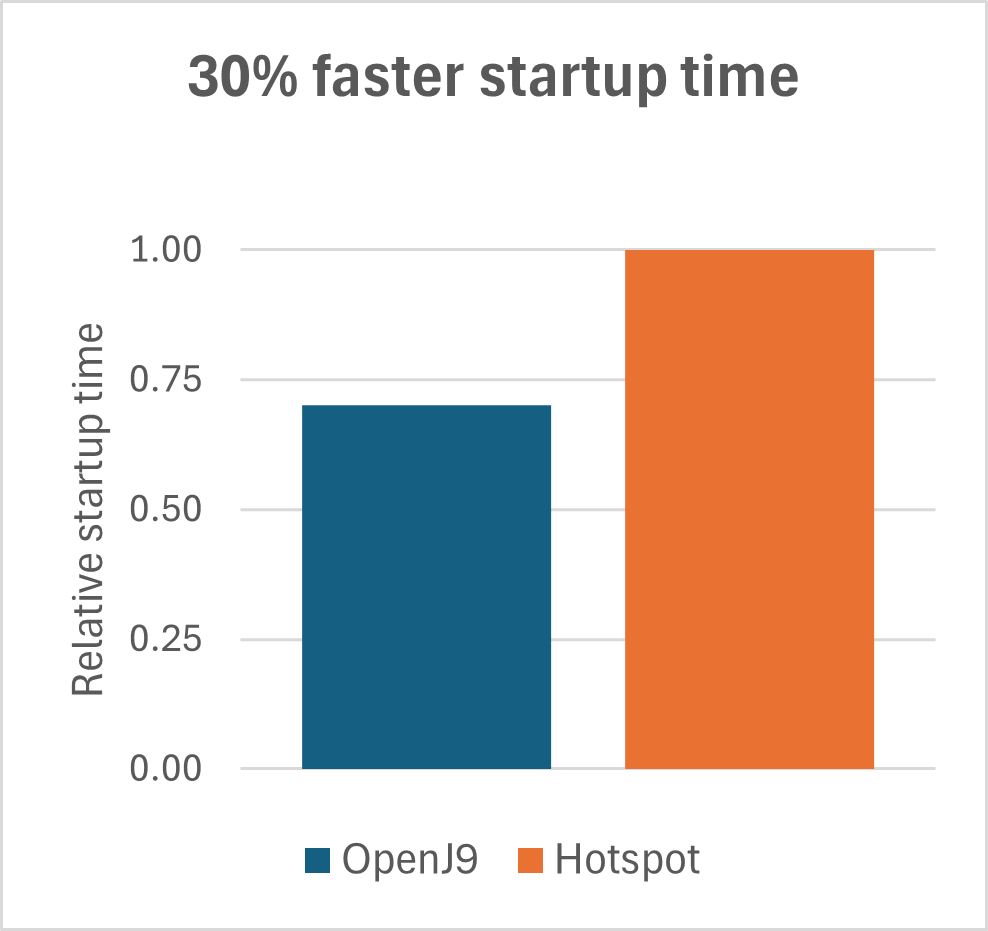
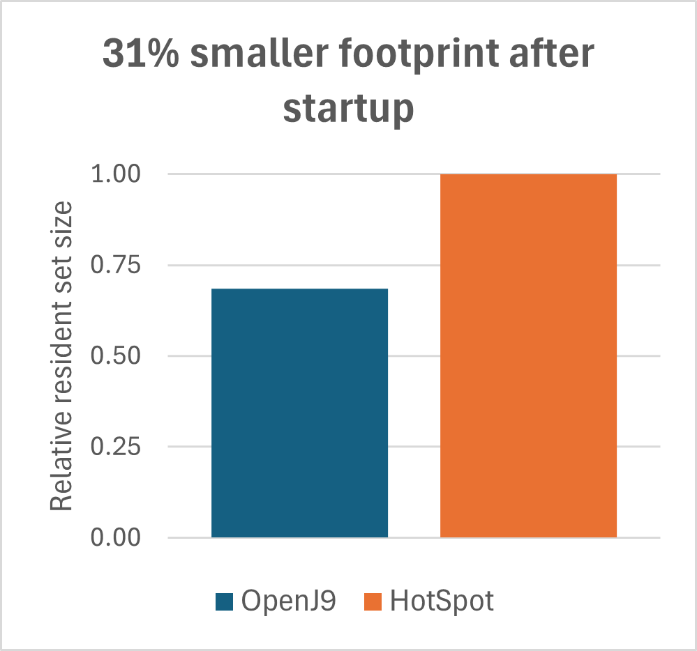
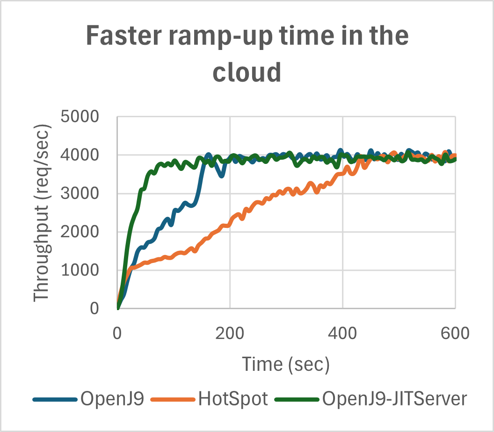
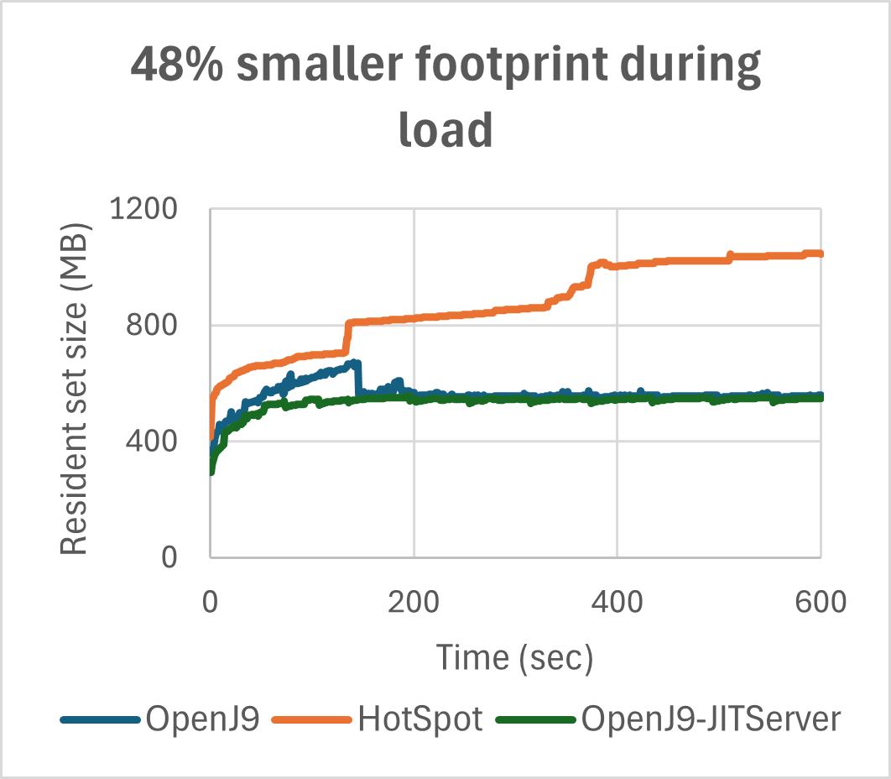
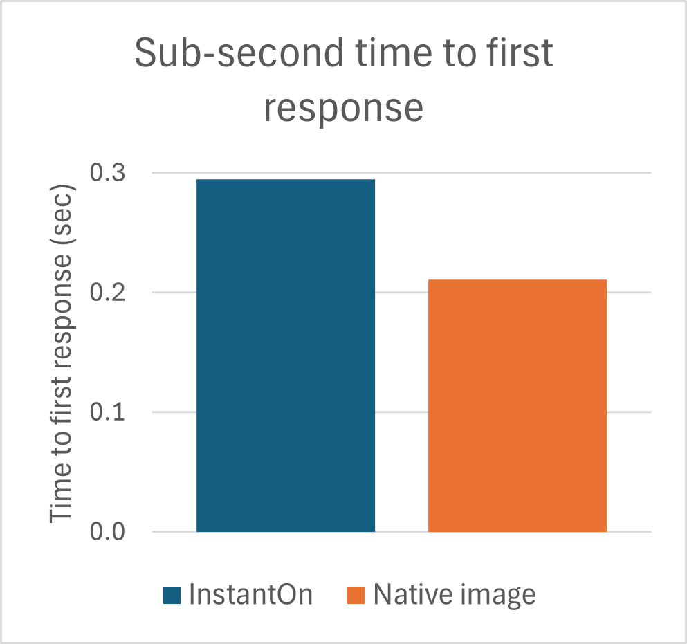
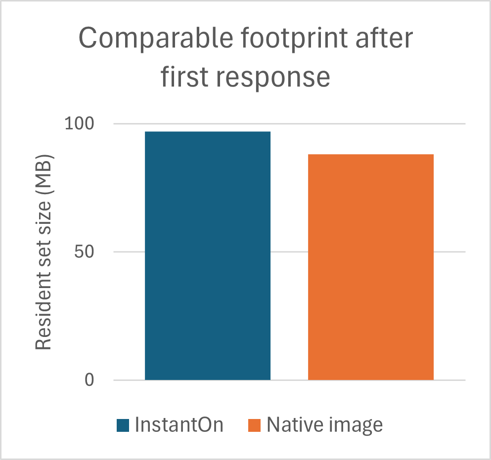

Performance Overview
Application performance can be measured by using many different metrics, including startup time, ramp-up time, footprint, and response time, as well as throughput. At Eclipse OpenJ9™, we keep a watchful eye on all of these metrics, making sensible tradeoffs and providing tuning options that allow the virtual machine (VM) to be optimized for different workloads. We regularly test and optimize OpenJ9 performance when running the most popular Java frameworks such as Open Liberty, Quarkus, Spring Boot, and Micronaut. We're proud of our results.
OpenJDK 17 performance with Eclipse OpenJ9
OpenJDK 17 with OpenJ9 significantly outperforms HotSpot on Open Liberty startup, ramp-up, and footprint.
|

By using shared classes cache and AOT technology, OpenJ9 starts in 70% of the time it takes HotSpot.
|

After startup, the OpenJ9 footprint is 69% the size of HotSpot, which makes it ideal for cloud workloads.
|

OpenJ9 reaches peak throughput much faster than HotSpot making it especially suitable for running short-lived applications.
The JITServer Technology speeds up rampup further.
|

When load is applied, the OpenJ9 footprint is only 52% the footprint taken by HotSpot. JITServer Technology eliminates the footprint spikes caused by JIT compilations.
|
For more information, see OpenJDK 17 performance with Eclipse OpenJ9.
OpenJDK 17 performance with Quarkus and Eclipse OpenJ9 InstantOn
Using Quarkus with OpenJ9 and InstantOn makes Java even more supersonic and subatomic!
|

InstantOn reduces the time to first response to ~300 ms. While this time is larger than the time needed for Native Image, it
represents only 6% of the time needed by HotSpot.
|

After first response, the InstantOn footprint is just a little larger (+9 MB) than the footprint needed by the Native Image.
|

InstantOn has a significant throughput advantage over the Native Image solution.
|

The large throughput advantage and relatively low footprint of InstantOn allows users to increase application density in the cloud by 38%.
|
For more information, see Quarkus Performance with Eclipse OpenJ9 InstantOn.